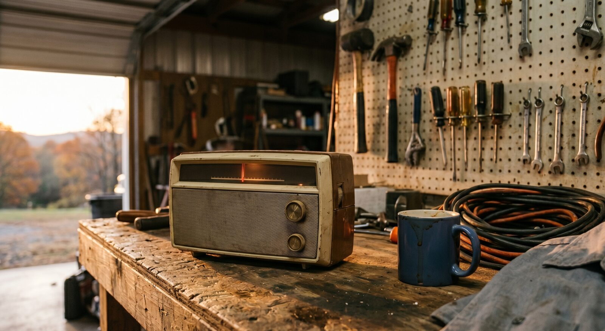

The tomato pie goes in the oven at four.
That gives it time to set and cool enough to cut by the time the green flag drops out in California. The race is in San Diego this year. A street course on a Navy base, of all things, three time zones away, which means it won't start until the afternoon's mostly gone and the light in the yard has gone long and gold.
Dad will have something to say about that. He and Mom are driving over from Wilkesboro this afternoon, and I already know the speech. Racing on a Navy base. In California. On city streets. He ran North Wilkesboro and Hickory and Caraway, hard little half-miles you could see all the way around, and the notion of running stock cars down a runway by the ocean strikes him as something close to a costume. He'll watch every lap of it. He always does.
It's Father's Day, which is the real reason for the drive, though nobody in this family would say it that plainly. There'll be a card on the table the kids made. Caleb will get one too. The two of them will do the thing the men do where they thank each other for nothing in particular and then go stand around the truck.
The tomato pie is the new part. Picked it up last summer down in Southport, where we spent a few days near the water doing close to nothing. A woman there made one for a porch supper, and I asked how, and she told me the way people tell you a recipe they've made a thousand times, which is to say not precisely at all. Tomatoes sliced and salted and left to drain so the whole thing doesn't go to soup. Good mayonnaise. Sharp cheddar with a little parmesan. Basil if you've got it. A crust you blind-bake first. The rest is just paying attention.
This is the fourth one I've made. The tomatoes came from the stand out on 268. The basil's from the pot by the back step the duck keeps trying to eat.
Caleb's in the garage. The carburetor that was supposed to be done Saturday is, naturally, not done. The radio's on low out there, working through the pre-race. He keeps drifting to the door to catch it and then drifting back to the bench. Crank has located the one cool square of concrete by the roll-up door and given his whole day to it.

The shirt's already on. It's always on by now.
So the pie goes in at four. Mom and Dad get here by five. The race runs late and far away, down streets none of us have ever raced on, and Dad will grumble at it for three hours and remember it fondly for thirty years. We'll eat tomato pie from a town we visited once and sandwiches off the smoker, and somewhere in the middle of all of it, quietly, it'll have been Father's Day. The good ones mostly sneak up like that.